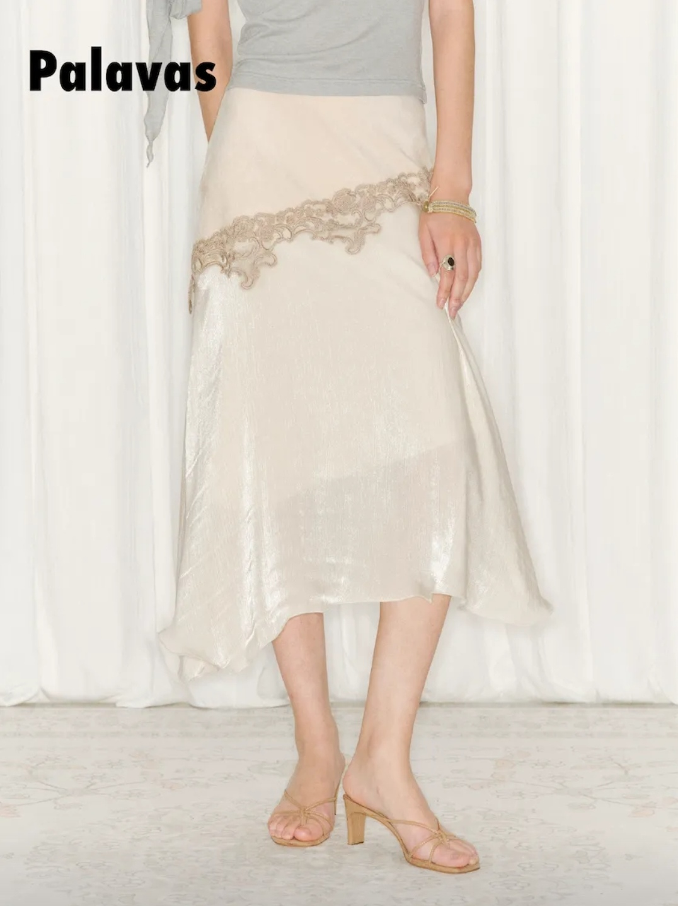
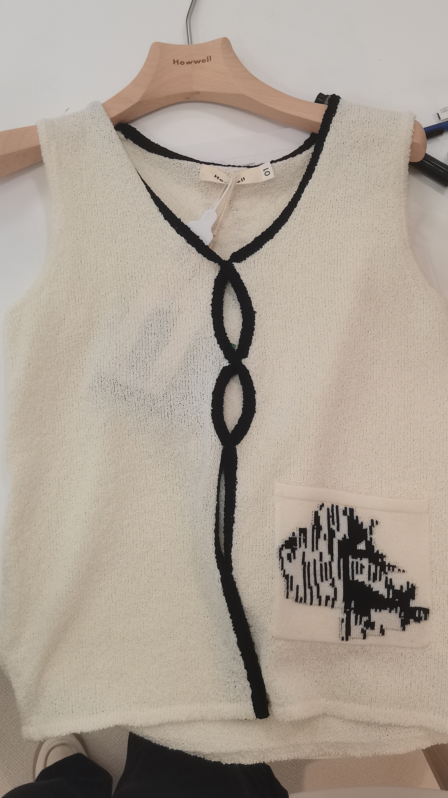
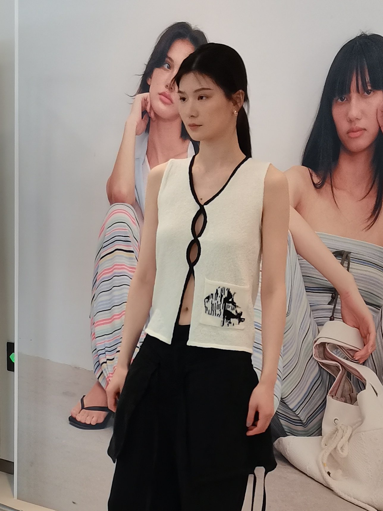
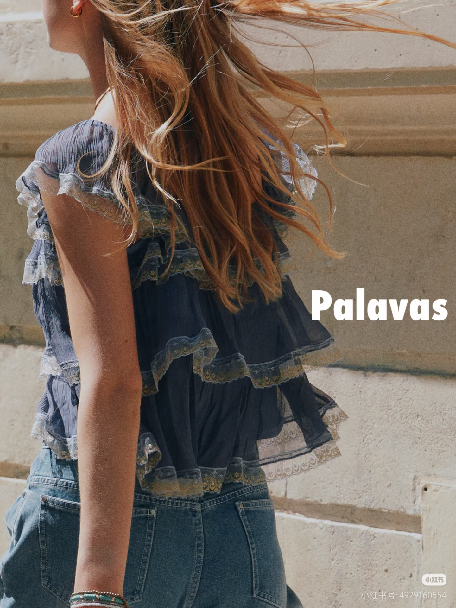
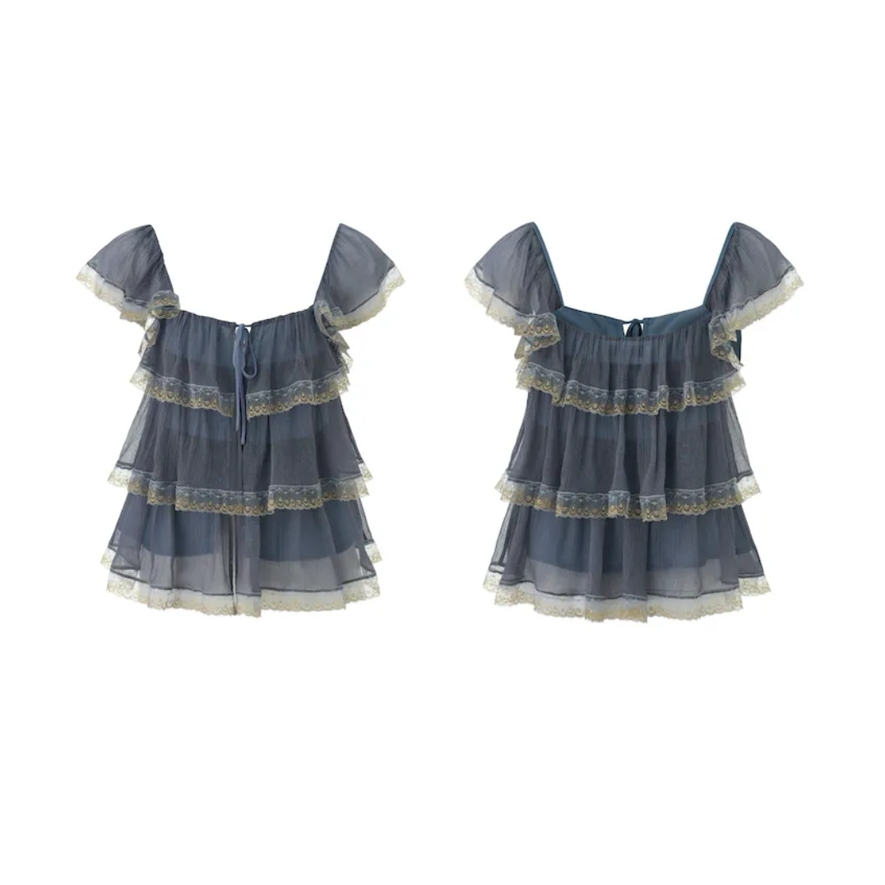
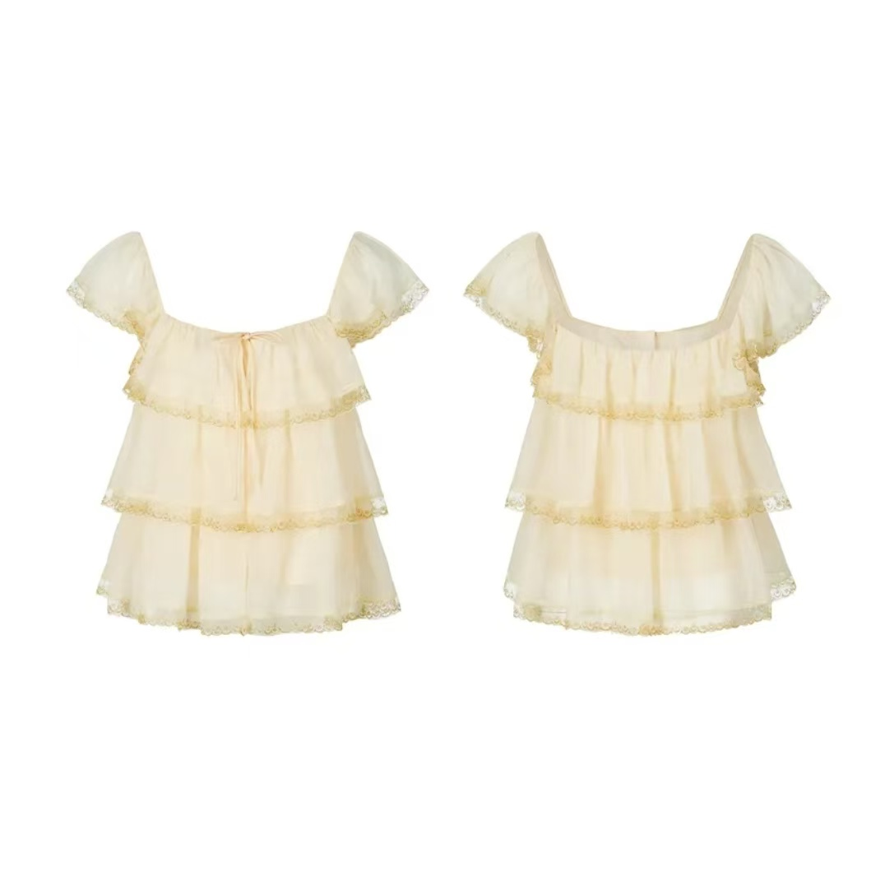
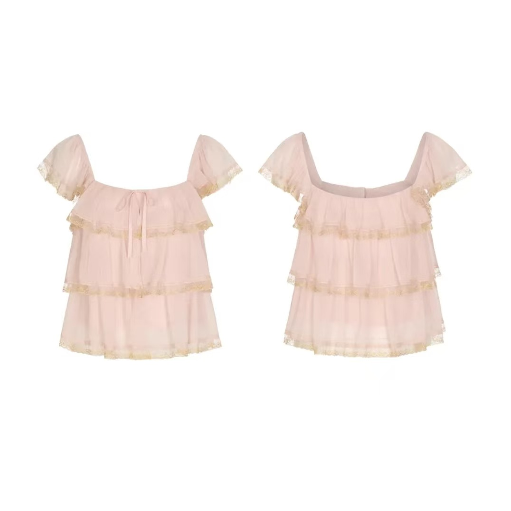
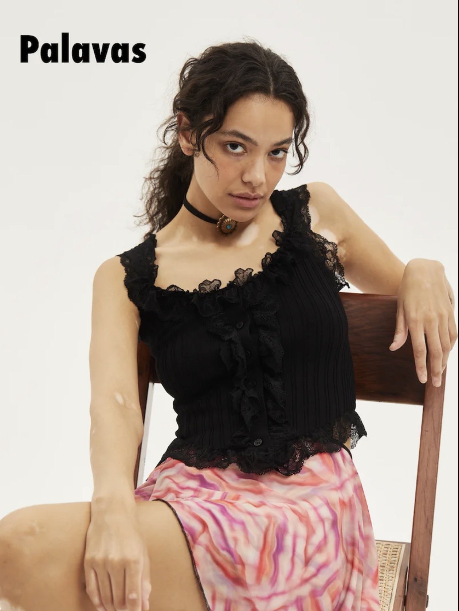
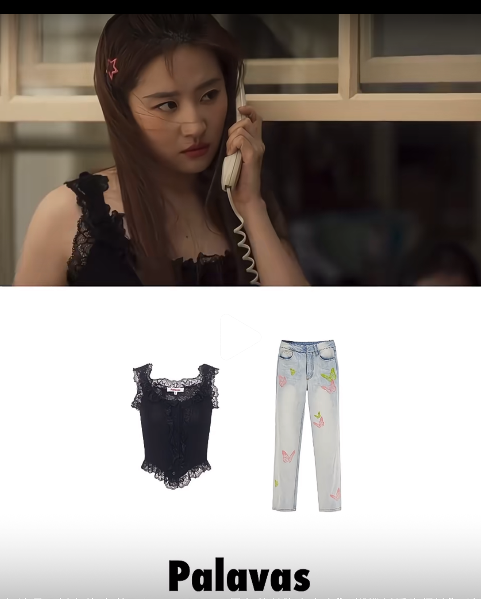

设计与市场之间，爆款究竟是如何诞生的？
How does a bestseller come to life?
被看见：审美直觉与市场共识
那些被设计 catch 的第一眼，无关市场，仅基于对创意和审美的直觉。当我发现最初吸引我的设计同样持续被买手翻牌，我意识到 market 存在“共识性审美” —— 对创意敏感，以及某些设计元素是跨越客群的。



被选择：审美只是选品的起点
买手的客群、销售渠道等因素，决定了他们最终的决策具有差异性。客群聚焦需求与场景，渠道决定对风险的容忍度。买手选择的从来不只是衣服。
被验证：爆款公式
爆款并非单纯由设计决定，它诞生于：
跨越客群渠道的设计语言之一是，创新恰好停留在大多数人能够理解的位置。其次，褶皱设计放大了面料轻盈感、灵动感。好的设计不是让面料承载设计，而是让设计释放面料。

爆款案例：消费者选择的不是颜色本身，而是颜色所完成的叙事。
这一款有三种颜色，为什么是它？名为“泰米尔晨昏上衣”，主体雾蓝与金属光泽蕾丝边的搭配营造晨昏时刻第一缕阳光划破深蓝色天际的冷静与梦幻，高级而层次感立体，是真正接近“晨昏感”的色彩表达。米白色治愈百搭，却容易淡化褶皱层次；嫩粉色则少女感风格指向过于明确，客群受限。爆款颜色往往不是最安全的，而是最能讲故事的。





爆款案例：为什么一件材质并不优秀的衣服成为了爆款？
手感偏硬，面料粗糙，但“刘亦菲同款”的身份自带明确高效的时尚语言，吸引络绎不绝的买手为它而来。材质问题可能影响复购，但未必影响第一次下单。被验证过且自带身份 icon 的设计，递给买手与消费者明确的参考系。
被传递：爆款的传播具有自发性
买手们也在寻找“确定性”，与其冒险推一个“可能火”的款，不如跟随“已经被验证过”的款。
爆款的诞生，比设计复杂，比运气具体。
好的设计会形成共识。
但真正决定成交的，
永远是它与谁相遇。